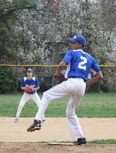

My name is Leon Finney IV, and I’m a Junior here at UMaine. I did my freshman and Sophomore years at Lackawanna College in Scranton Pennsylvania. I started playing T-ball for Mt. Airy Baseball in Philadelphia when I was five. I loved the sport ever since. I played for Mt. Airy Baseball for many years, often times playing for more than one club at the same time. I played high school baseball for Science Leadership Academy in Philadelphia. I played for the Phillies and Milwaukee RBI clubs, I played for Utica Blue Sox, as well as many other organizations. Come out and support us, we doing big things this years.
